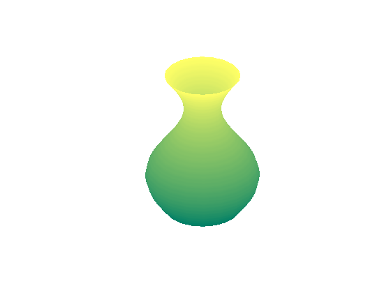

This is an example of how to create a surface plot in MATLAB®.
Read about the surf function in the MATLAB® documentation.
Go to MATLAB Plot Gallery
% Generate points for a cylinder with profile 2 + sin(t) t = 0:pi/50:2*pi; [x, y, z] = cylinder(2+sin(t)); % Create a surface plot using the surf function figure; surf(x, y, z, 'LineStyle', 'none', 'FaceColor', 'interp'); colormap('summer'); % Turn off the axis and the grid axis('square', 'off'); grid('off');